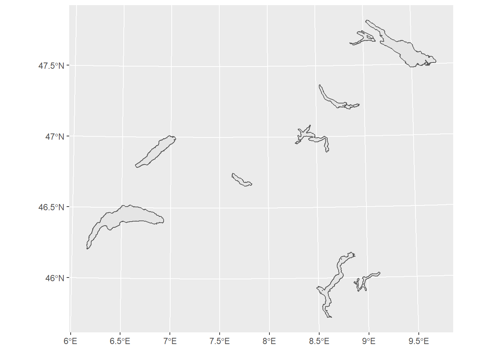
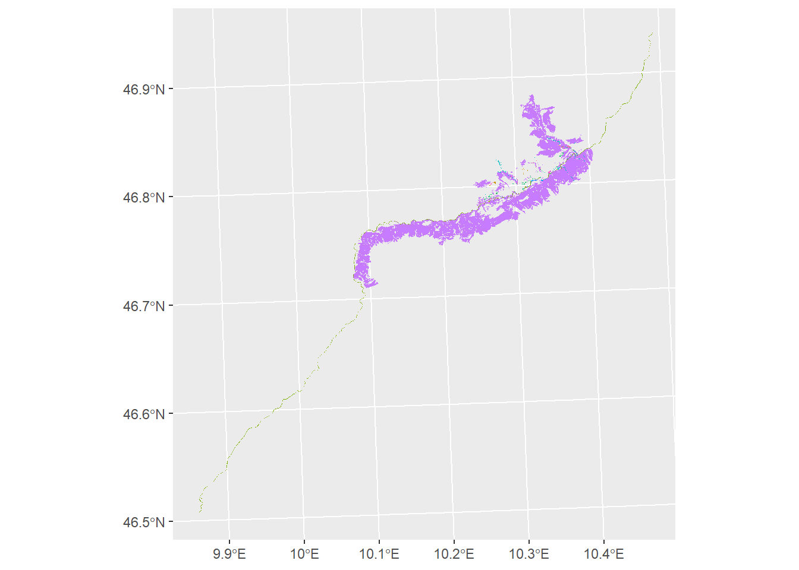

Chapter 4 TLM Bodenbedeckung
bodenbedeckung <- "C:/Users/rata/Geodata/TLM/bodenbedeckung/bodenbedeckung_2018.gpkg"
conn_bodenbeckung <- DBI::dbConnect(RSQLite::SQLite(),bodenbedeckung)## [1] "TLM_BODENBEDECKUNG"
## [2] "gpkg_contents"
## [3] "gpkg_extensions"
## [4] "gpkg_geometry_columns"
## [5] "gpkg_metadata"
## [6] "gpkg_metadata_reference"
## [7] "gpkg_spatial_ref_sys"
## [8] "gpkg_tile_matrix"
## [9] "gpkg_tile_matrix_set"
## [10] "rtree_TLM_BODENBEDECKUNG_geom"
## [11] "rtree_TLM_BODENBEDECKUNG_geom_node"
## [12] "rtree_TLM_BODENBEDECKUNG_geom_parent"
## [13] "rtree_TLM_BODENBEDECKUNG_geom_rowid"
## [14] "sqlite_sequence"What are columns in “TLM_BODENBEDECKUNG”?
## [1] "id" "geom" "OBJECTID"
## [4] "UUID" "DATUM_AENDERUNG" "DATUM_ERSTELLUNG"
## [7] "ERSTELLUNG_JAHR" "ERSTELLUNG_MONAT" "REVISION_JAHR"
## [10] "REVISION_MONAT" "GRUND_AENDERUNG" "HERKUNFT"
## [13] "HERKUNFT_JAHR" "HERKUNFT_MONAT" "REVISION_QUALITAET"
## [16] "OBJEKTART" "SHAPE_Length" "SHAPE_Area"The most important column is OBJEKTART. Possible values are:
## OBJEKTART number_of_features
## 1 Fels 183833
## 2 Feuchtgebiet 13293
## 3 Fliessgewaesser 1045
## 4 Gebueschwald 29293
## 5 Gletscher 5996
## 6 Lockergestein 132734
## 7 Stehende Gewaesser 16776
## 8 Wald 105860
## 9 Wald offen 16378## Reading layer `TLM_BODENBEDECKUNG' from data source `C:\Users\rata\Geodata\TLM\bodenbedeckung\bodenbedeckung_2018.gpkg' using driver `GPKG'
## Simple feature collection with 9 features and 16 fields
## geometry type: POLYGON
## dimension: XYZ
## bbox: xmin: 2500391 ymin: 1064011 xmax: 2774371 ymax: 1297554
## z_range: zmin: 193.393 zmax: 557.677
## CRS: 2056
engadin_bounding <- "'POLYGON(( 2814113.8209 1186621.2645, 2824505.1432 1192051.0384, 2825612.8825 1189931.0834, 2815221.5603 1184501.3095, 2814113.8209 1186621.2645 ))'"
myquery <- paste0("select * from TLM_BODENBEDECKUNG as bodenbedeckung, (select PolygonFromText(",engadin_bounding,", 2056) as geom) sel where st_intersects(bodenbedeckung.geom, sel.geom)")
myquery## [1] "select * from TLM_BODENBEDECKUNG as bodenbedeckung, (select PolygonFromText('POLYGON(( 2814113.8209 1186621.2645, 2824505.1432 1192051.0384, 2825612.8825 1189931.0834, 2815221.5603 1184501.3095, 2814113.8209 1186621.2645 ))', 2056) as geom) sel where st_intersects(bodenbedeckung.geom, sel.geom)"## Reading layer `TLM_BODENBEDECKUNG' from data source `C:\Users\rata\Geodata\TLM\bodenbedeckung\bodenbedeckung_2018.gpkg' using driver `GPKG'
## Simple feature collection with 378 features and 16 fields
## geometry type: POLYGON
## dimension: XYZ
## bbox: xmin: 2785540 ymin: 1153262 xmax: 2832409 ymax: 1202888
## z_range: zmin: 981.21 zmax: 2308.518
## CRS: 2056